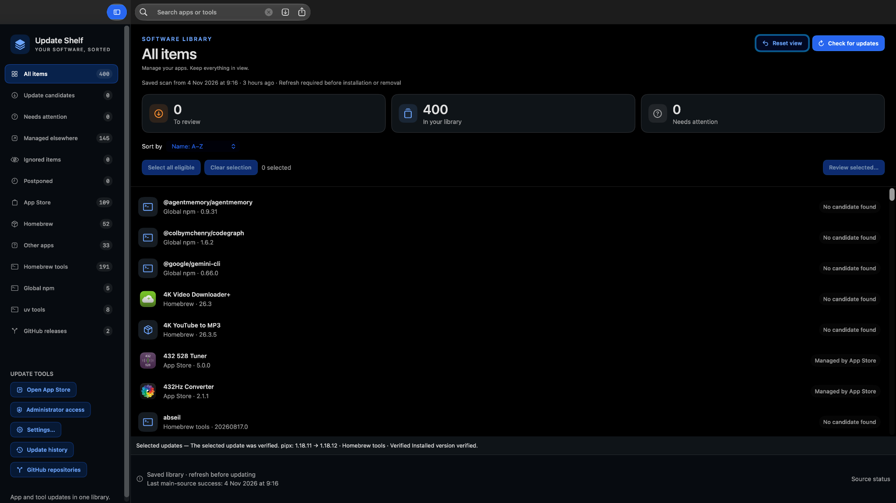

Your software, sorted.
Find supported updates for your Mac apps and tools in one searchable library. Review and install eligible updates here, or open the responsible app or store for the rest.
What’s new in 0.9.3
Clearer update checks: see which sources were checked, which were skipped, and which could not be reached. Successful Sparkle and Electron checks now appear in Source status, and skipped channels are no longer counted as successful checks.

See Mac apps, Homebrew apps and tools, global npm packages, uv tools, and connected GitHub releases in one library. Search and sort by name or app-bundle size. Coverage depends on each source.
Select supported Homebrew, npm, and uv updates, review the proposed changes, then run them one at a time. Results say whether each change was verified, failed, or still needs checking.
App Store updates stay with Apple. Vendor-managed and unsupported updates need their own app, updater, or website. Finding an update does not mean Update Shelf can install it.
Postpone an app until tomorrow or next week, ignore an app, or skip a particular version. These choices control Update Shelf; they do not disable another app’s own updater.
Search and filter update history, inspect recorded outcomes, and check again without installing. Opening Update Shelf shows saved results without starting an update check.
Connect a GitHub repository for supported release checks, or save a developer website for reference. A website bookmark does not automatically become a version checker or an approved installer.
Scheduled checks are a separate opt-in. Automatic installation has its own switch and is limited to one eligible Homebrew app per successful cycle, with safety checks. Other updates remain manual.
Failed checks and unknown versions are not reported as up to date. Some apps require a manual check; Update Shelf does not promise complete coverage of every Mac app or plug-in.
The current release is signed and notarized, with automated tests and targeted app checks completed. Broader accessibility, account, sleep/scheduling, and failure-recovery testing remains in progress.
The app and the disk image are both notarized and stapled.
d1f1c0ff5fcbe496f340426de8e1a70086f9b491d48c521cb6a16f4b38b1e1d5